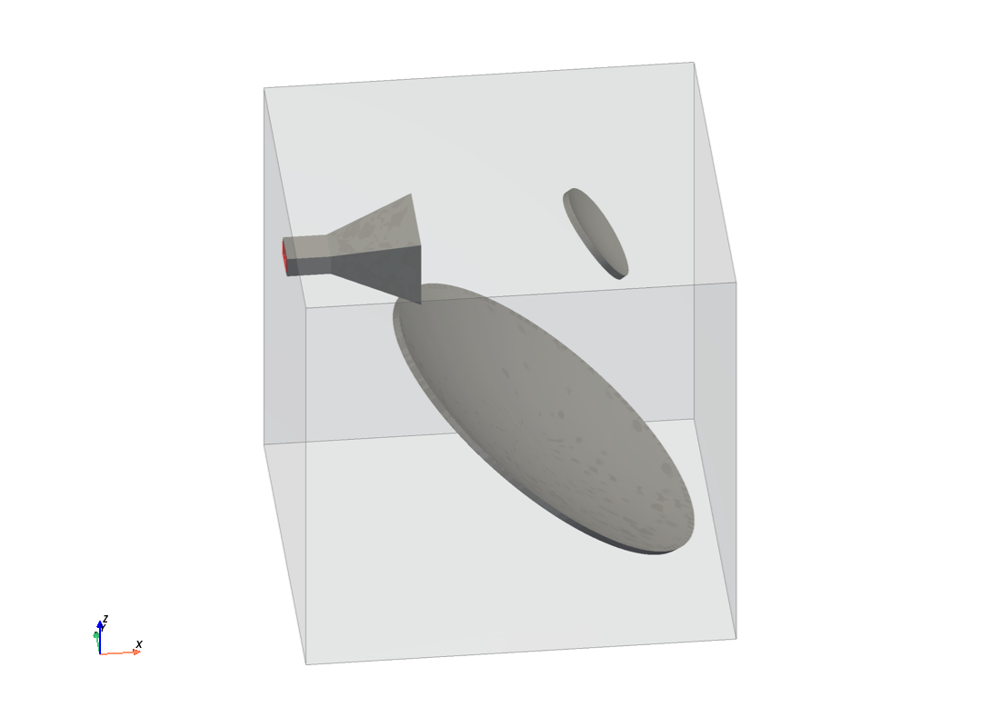
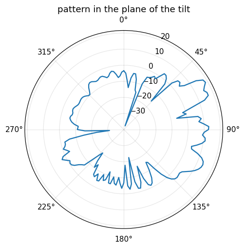
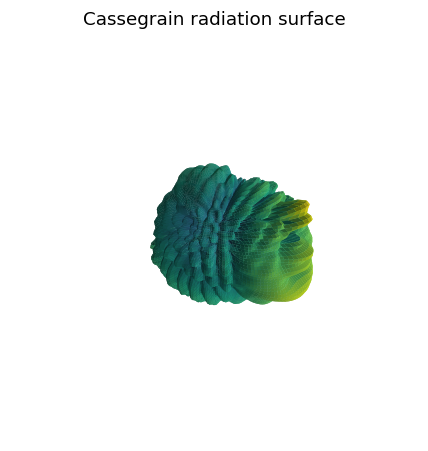

Note
Go to the end to download the full example code.
Offset Cassegrain reflector: parametric surfaces and a horn feed#
Every reflector so far — there was none. The geometry chapters built bodies from primitives, profiles and lofts; an antenna dish is a surface given by a formula, a paraboloid, and the subreflector of a Cassegrain system is another one, a hyperboloid. This tutorial builds an offset Cassegrain antenna from two such surfaces, feeds it with a pyramidal horn from the wall of an open box, and reads its radiation pattern off the far-field monitor.
Three things are new:
parametric()turns any map \((u, v) \mapsto (x, y, z)\) into a curved sheet, whichextruded()makes into a metal shell — the map may be a closed formula or, as for the subreflector here, a short computation;a waveguide port in an absorbing wall: the horn’s neck ends on the
xminface, which is CPML like the other five, and the port sits in the neck’s cross-section;the far field of a waveguide-fed antenna, whose feed guide crosses the Huygens box.
The antenna is electrically small for a Cassegrain — an 8 λ dish and a 2 λ subreflector, where a real system has 20 λ and more — so its pattern is diffraction-dominated; the point of the page is the construction. The script runs for minutes (a 2 M-cell mesh and a GPU-sized time-domain run), so the gallery renders it without executing it; the figures and the numbers quoted below are from a measured run.
The optics#
A Cassegrain antenna is a paraboloid (the main reflector) with a hyperboloid (the subreflector) in front of its focus. Rays leaving the dish converge toward the paraboloid’s focus \(F\); the convex hyperboloid intercepts them and, because \(F\) is one of its two foci, sends them to the other, \(P\), where the feed sits. The offset version uses only a patch of the paraboloid that lies to one side of its axis, so that neither subreflector nor feed stands in the beam.
The design is a handful of numbers in the paraboloid’s own frame — axis along \(z\), vertex at the origin, focus at \((0, 0, F)\):
quantity |
value |
|---|---|
frequency |
10 GHz |
focal length \(F\) |
180 mm |
aperture diameter \(D\) |
240 mm (8 λ) |
aperture centre offset |
150 mm |
subreflector diameter |
70 mm |
subreflector before focus |
50 mm |
feed phase centre \(P\) |
(−20, 0, 40) mm |
import numpy as np
import magnelio as mio
from magnelio import geo, monitors, ports
f0 = 10.0e9
wavelength = 3.0e8 / f0
focal = 0.18 # paraboloid focal length
diameter = 0.24 # aperture diameter
offset = 0.15 # aperture centre, off the paraboloid axis
d_sub = 0.07 # subreflector diameter
s_from_focus = 0.05 # subreflector on the central ray, this far before the focus
p_feed = np.array([-0.02, 0.0, 0.04]) # feed phase centre
t_shell = 5.0e-3 # reflector shell thickness — two cells or more
focus = np.array([0.0, 0.0, focal])
aperture_centre = np.array([offset, 0.0, offset**2 / (4 * focal)])
central_ray = (focus - aperture_centre) / np.linalg.norm(focus - aperture_centre)
hit = focus - s_from_focus * central_ray # where the central ray meets the subreflector
The hyperboloid follows from its two foci and one point on it: a point of the branch nearer \(F\) is \(2a\) closer to \(F\) than to \(P\), with \(2c\) the focal distance. The ratio \(e = c/a\) is its eccentricity, and the magnification \(M = (e + 1)/(e - 1)\) — how much longer the system’s equivalent focal length is than the paraboloid’s — is the number a reflector designer quotes.
c_h = np.linalg.norm(focus - p_feed) / 2
a_h = (np.linalg.norm(hit - p_feed) - np.linalg.norm(hit - focus)) / 2
b_h = np.sqrt(c_h**2 - a_h**2)
centre_h = 0.5 * (p_feed + focus)
axis_h = (focus - p_feed) / (2 * c_h)
print(f"hyperboloid: a = {a_h * 1e3:.1f} mm, c = {c_h * 1e3:.1f} mm, e = {c_h / a_h:.2f}")
print(f"magnification M = {(c_h / a_h + 1) / (c_h / a_h - 1):.2f}")
The main reflector#
The dish is the paraboloid \(z = (x^2 + y^2)/4F\) over a circular
aperture centred at offset. Parametrising the map in polar
coordinates about the aperture centre — radius and angle, not
\(x\) and \(y\) — makes the rim of the patch an exact circle
without any trimming afterwards. The sheet is sampled on a 32 × 64
grid and interpolated; the extrusion along −z gives it a thickness.
def paraboloid(r, phi):
x = offset + r * np.cos(phi)
y = r * np.sin(phi)
return x, y, (x * x + y * y) / (4 * focal)
dish_sheet = geo.Surface.parametric(
paraboloid, u=(0.0, diameter / 2), v=(0.0, 2 * np.pi), samples=(32, 64)
)
main_reflector = dish_sheet.extruded(vector=(0.0, 0.0, -t_shell), material="pec")
The subreflector#
The subreflector is a patch of the hyperboloid around the central hit. Its map is again a disc — in the plane tangent to the hyperboloid at the hit, spanned by the normal there — but the third coordinate is not a formula: each disc point is projected along the normal onto the surface by solving the hyperboloid’s quadratic equation along that line. A parametric map may compute; NumPy arrays go in, three arrays come out.
def hyperboloid_normal(p):
q = p - centre_h
zeta = q @ axis_h
grad = 2 * zeta / a_h**2 * axis_h - 2 * (q - zeta * axis_h) / b_h**2
return grad / np.linalg.norm(grad)
n_hit = hyperboloid_normal(hit)
e_y = np.array([0.0, 1.0, 0.0])
e_t = np.cross(e_y, n_hit)
e_t /= np.linalg.norm(e_t)
def hyperboloid_patch(r, phi):
"""Disc of radius r about the hit, projected along the normal onto the surface."""
q0 = (
hit[:, None, None]
+ (r * np.cos(phi))[None] * e_t[:, None, None]
+ (r * np.sin(phi))[None] * e_y[:, None, None]
)
# Points q0 + t n on the hyperboloid zeta²/a² − rho²/b² = 1, with
# zeta the coordinate along the axis and rho the distance from it.
dq = q0 - centre_h[:, None, None]
z0 = np.einsum("i,ijk->jk", axis_h, dq)
zn = n_hit @ axis_h
rho0 = dq - z0[None] * axis_h[:, None, None]
rhon = n_hit - zn * axis_h
A = zn**2 / a_h**2 - (rhon @ rhon) / b_h**2
B = 2 * (z0 * zn / a_h**2 - np.einsum("ijk,i->jk", rho0, rhon) / b_h**2)
C = z0**2 / a_h**2 - np.einsum("ijk,ijk->jk", rho0, rho0) / b_h**2 - 1.0
root = np.sqrt(np.maximum(B * B - 4 * A * C, 0.0))
t1, t2 = (-B + root) / (2 * A), (-B - root) / (2 * A)
t = np.where(np.abs(t1) < np.abs(t2), t1, t2) # the root next to the tangent plane
p = q0 + t[None] * n_hit[:, None, None]
return p[0], p[1], p[2]
sub_sheet = geo.Surface.parametric(
hyperboloid_patch, u=(0.0, d_sub / 2), v=(0.0, 2 * np.pi), samples=(16, 48)
)
# The normal at the hit points toward the dish (the convex side); the
# shell grows behind the surface, away from the incoming rays.
behind = -n_hit if n_hit @ central_ray < 0 else n_hit
subreflector = sub_sheet.extruded(vector=tuple(t_shell * behind), material="pec")
Orientation#
The feed must enter through a box wall, so the whole assembly is turned about \(y\) until the feed axis — from \(P\) to the hit on the subreflector — points along +x. The beam, the paraboloid’s +z, then leaves at an angle: that is the oblique radiation the pattern will show. (Rotating a sheet keeps it a sheet; here the solids are rotated, which is the same thing one step later.)
feed_axis = (hit - p_feed) / np.linalg.norm(hit - p_feed)
turn = np.degrees(np.arctan2(feed_axis[2], feed_axis[0])) # about y, feed axis -> +x
rotate = lambda shape: shape.rotated("y", turn, origin=tuple(p_feed)) # noqa: E731
main_reflector = rotate(main_reflector)
subreflector = rotate(subreflector)
beam = np.array([np.sin(np.radians(turn)), 0.0, np.cos(np.radians(turn))])
print(f"assembly turned by {turn:.1f} deg; beam direction {beam.round(3)}")
print(f"beam is {np.degrees(np.arccos(beam[2])):.1f} deg off the box's +z axis")
The feed horn#
A WR-90 neck runs from the xmin wall along +x to the throat of a
pyramidal horn whose mouth is at \(P\) — standard horn numbers,
not optimised. Outer and inner lofts make the walls; the neck is a
pair of bricks.
a_wg, b_wg = 22.86e-3, 10.16e-3 # WR-90
l_neck, l_horn = 30e-3, 60e-3
a_mouth, b_mouth = 60e-3, 45e-3
wall = 2e-3
x_mouth = p_feed[0]
x_throat = x_mouth - l_horn
x_wall = x_throat - l_neck
yc, zc = p_feed[1], p_feed[2]
def rectangle(x, a, b, grow=0.0):
return geo.Face(
normal="x",
points=(
(yc - a / 2 - grow, zc - b / 2 - grow),
(yc + a / 2 + grow, zc - b / 2 - grow),
(yc + a / 2 + grow, zc + b / 2 + grow),
(yc - a / 2 - grow, zc + b / 2 + grow),
),
position=x,
)
flare_a, flare_b = (a_mouth - a_wg) / l_horn, (b_mouth - b_wg) / l_horn
horn_outer = geo.Loft(
rectangle(x_throat, a_wg, b_wg, wall),
rectangle(x_mouth, a_mouth, b_mouth, wall),
blend="ruled",
material="pec",
)
horn_inner = geo.Loft(
rectangle(x_throat - 1e-3, a_wg - 1e-3 * flare_a, b_wg - 1e-3 * flare_b),
rectangle(x_mouth + 1e-3, a_mouth + 1e-3 * flare_a, b_mouth + 1e-3 * flare_b),
blend="ruled",
material="air",
)
neck_outer = geo.Brick(
origin=(x_wall, yc - a_wg / 2 - wall, zc - b_wg / 2 - wall),
size=(l_neck + 1e-3, a_wg + 2 * wall, b_wg + 2 * wall),
material="pec",
)
neck_inner = geo.Brick(
origin=(x_wall - 1e-3, yc - a_wg / 2, zc - b_wg / 2),
size=(l_neck + 2e-3, a_wg, b_wg),
material="air",
)
horn = geo.Difference(geo.Union(neck_outer, horn_outer), neck_inner, horn_inner)
The box and the port#
Half a wavelength of clearance around everything, six absorbing
faces, and the neck ending exactly on xmin. The port is a
window in that face with the neck’s inner cross-section as its
corners: a port in an absorbing wall must be the end of a
conductor-enclosed guide, and the window must match the guide’s
walls (the ports chapter states the rule). Behind the window the
absorber is switched off, so the mode meets the port’s own
termination.
parts = [main_reflector, subreflector, horn]
lo = np.min([p.bounding_box()[0] for p in parts], axis=0) - wavelength / 2
hi = np.max([p.bounding_box()[1] for p in parts], axis=0) + wavelength / 2
lo[0] = x_wall
model = mio.GeometryModel(
boundary_conditions={f: "CPML" for f in ("xmin", "xmax", "ymin", "ymax", "zmin", "zmax")}
)
air = geo.Brick(origin=tuple(lo), size=tuple(hi - lo), material="air")
model.add(geo.Difference(air, main_reflector, subreflector, horn))
model.add(main_reflector)
model.add(subreflector)
model.add(horn)
model.add_port(
ports.PortWaveguide(
name="feed",
plane="xmin",
corners=((None, yc - a_wg / 2, zc - b_wg / 2), (None, yc + a_wg / 2, zc + b_wg / 2)),
)
)
print(f"box: {np.round((hi - lo) * 1e3, 0)} mm")
model.plot()
The assembled antenna — horn on the left, the subreflector on its axis, the dish behind and below it, the beam leaving obliquely upward:
{kind=link}

Mesh#
Free-form surfaces give the mesher nothing to hold on to — no feature planes, only their bounding boxes — so the resolution across the reflectors is the wavelength rule’s: about 1.7 mm at the 12 GHz band edge. The horn is the opposite case: its walls and loft rims are edges a millimetre or two apart, and honouring every one of them refines the grid to that scale across the whole box — ten times the cells. A floor of half a cell drops those planes (with a warning naming them); the wall of a perfect conductor needs no cells of its own. 2 M cells for this box, about a minute to mesh. The 5 mm shells are three cells thick, comfortably above the two-cell rule of the geometry chapter.
f_max = 12.0e9
mesh = mio.Mesh.from_geometry(
model, mio.MeshControl(max_cell_size=5e-3, min_cell_size=2.5e-3), f_max=f_max
)
print(f"grid: {mesh.Nx} x {mesh.Ny} x {mesh.Nz} cells")
The port report shows the neck’s TE10 mode; its cut-off lands within a few percent of WR-90’s 6.56 GHz on this coarse neck (13 cells across the broad wall).
analysis = mio.AnalysisScatteringTD(mesh=mesh, f_min=8.5e9, verbose=False)
print(analysis.solve_ports()["feed"])
Run and far field#
One far-field frequency is enough for a pattern. The monitor knows
that the feed crosses its box: the xmin face is sampled at the
absorber interface, the neck’s interior is left out of the surface,
and the normalisation refers to the incident power the TE10 port
launched at each frequency.
farfield = monitors.MonitorFarFieldFrequency(freqs=[f0], name="farfield")
analysis = mio.AnalysisScatteringTD(mesh=mesh, f_min=8.5e9, monitors=(farfield,), verbose=False)
f_axis = np.linspace(8.5e9, 11.5e9, 31)
result = analysis.run(f_axis=f_axis, excited=["feed"])
pattern = farfield.result(f0)
directivity = pattern.directivity
i_peak = np.unravel_index(np.argmax(directivity), directivity.shape)
theta_peak, phi_peak = pattern.theta[i_peak[0]], pattern.phi[i_peak[1]]
peak_dir = np.array(
[
np.sin(theta_peak) * np.cos(phi_peak),
np.sin(theta_peak) * np.sin(phi_peak),
np.cos(theta_peak),
]
)
s11 = np.abs(result.S("feed", "feed"))
print(f"peak directivity: {10 * np.log10(directivity.max()):.1f} dBi")
print(f"aperture bound: {10 * np.log10((np.pi * diameter / wavelength) ** 2):.1f} dBi")
print(f"beam: designed {beam.round(3)}, measured {peak_dir.round(3)}, ")
print(f" {np.degrees(np.arccos(np.clip(peak_dir @ beam, -1, 1))):.1f} deg apart")
print(f"|S11| at f0: {20 * np.log10(np.interp(f0, f_axis, s11)):.1f} dB")
print(f"radiated / accepted power: {pattern.P_rad / (1 - np.interp(f0, f_axis, s11) ** 2):.2f}")
The pattern: a cut through the plane of the tilt (the \(xz\) plane, \(\varphi = 0\)) and the full radiation surface. The main beam sits where the paraboloid’s axis points after the turn; the sidelobes and the spillover past the subreflector are what an 8 λ dish and a 2 λ subreflector cannot avoid.
fig, ax = pattern.plot_cut(plane="phi", angle=0.0, title="pattern in the plane of the tilt")
fig, ax = pattern.plot_3d(title="Cassegrain radiation surface")
{kind=link}

{kind=link}

The measured run#
Numbers from the run this page was written against (131 × 122 × 130 cells; one minute to mesh, under a minute to run on a consumer GPU):
quantity |
value |
|---|---|
peak directivity |
19.2 dBi |
aperture bound \((\pi D/\lambda)^2\) |
28.0 dBi |
beam direction, measured vs designed |
2° apart |
|S11| over 8.5–11.5 GHz |
−12 … −19 dB |
radiated / accepted power |
0.93 |
power balance of the far-field box |
1.005 |
Eight decibels below the aperture bound is what an 8 λ dish with a
2 λ subreflector and an unoptimised horn does: spillover past the
small subreflector and diffraction at its rim take the difference.
The beam points where the construction says it should, which is the
check that the two parametric surfaces, their orientation and the
far-field transform agree. The 7 % of accepted power the far field
does not account for is the feed-guide approximation of the
far-field chapter — the currents on the neck’s outer wall inside the
absorber. The monitor’s own check confirms that reading: the flux
through the recording box (pattern.surface_power) is short of
the accepted power by the same 7 %, and the pattern radiates that
flux to 0.5 % (pattern.power_balance) — the box’s half-wavelength
clearance is enough for this radiator; the missing power never
crosses it.
What to take away#
A reflector is a surface with a formula, and
parametric() accepts the formula —
closed-form or computed, in the parametrisation that makes the rim
come out right. Extruded into a shell a few cells thick, it is a
perfect conductor like any other body. A horn feed enters through
an absorbing wall as a window port in its neck’s cross-section, and
the far-field monitor treats the crossing feed for you. To make the
antenna behave like a Cassegrain rather than a diffraction
experiment, scale the dish to 20 λ and the subreflector to 5 λ — and
budget the cells accordingly.